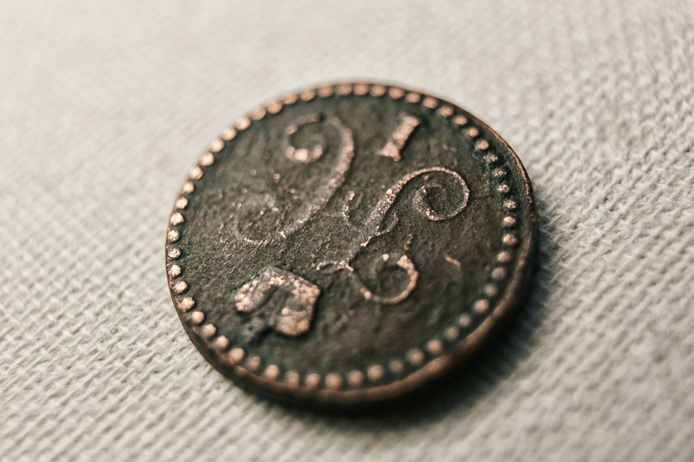
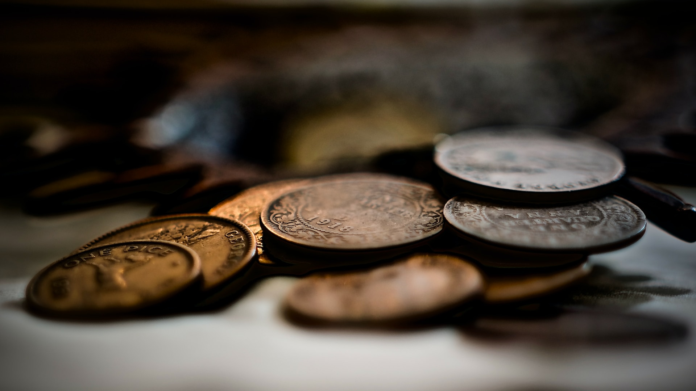
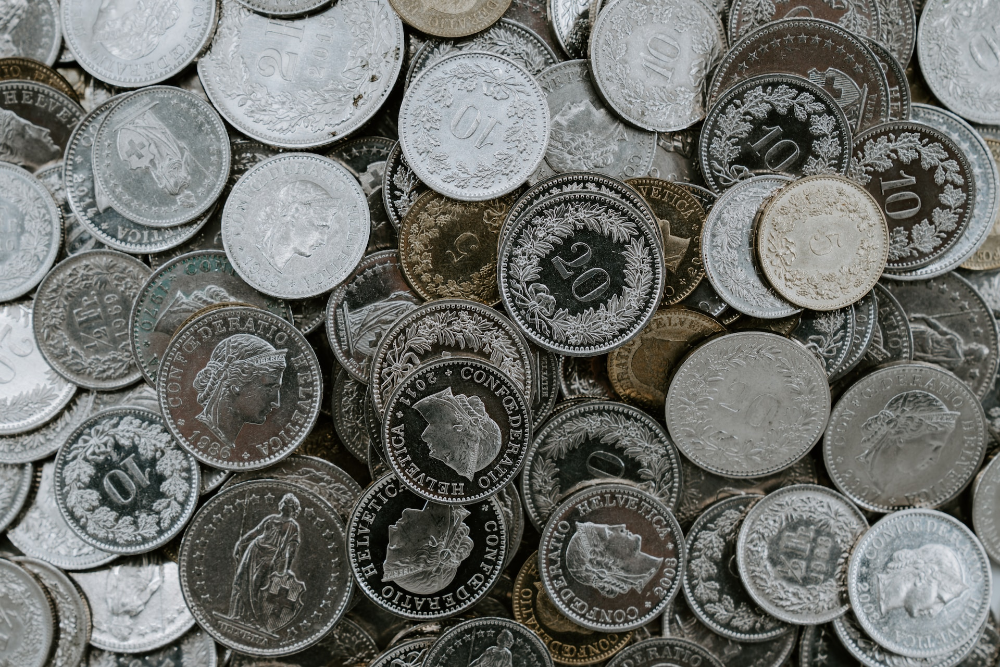
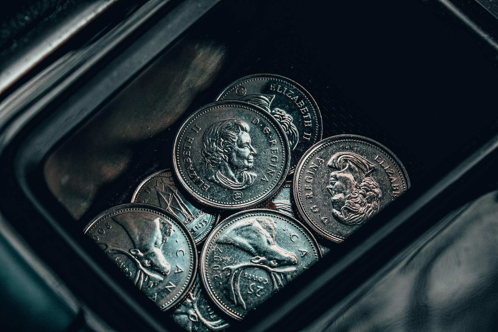

Нумизматика и история.
Нумизматика является уникальным способом изучения истории. Монеты могут рассказывать о торговле, политических событиях, государственной символике и даже повседневной жизни народа, который их использовал. Нумизматы анализируют монеты с разных периодов и регионов, чтобы понять, как эти монеты отражают тот или иной момент истории. Монеты являются важным источником информации о прошлых временах, политических системах, культуре и искусстве. Изучение монет позволяет узнать о различных эпохах и событиях.


Сбор монет.
Нумизматы занимаются сбором и коллекционированием монет. Монеты считаются ценными коллекционными предметами и могут иметь высокую денежную стоимость. Коллекционирование монет - это не только увлекательное хобби, но и инвестиционная деятельность. Коллекционирование монет может стать увлекательным хобби, которое позволяет познавать мир через предметы, которые использовались в разные эпохи. Многие любители монет собирают коллекции монет, стремясь заполнить мозаику истории.Задачи нумизматики.
Одна из основных задач нумизматики - идентификация и датировка монет. Нумизматы изучают монеты, чтобы определить их возраст, происхождение и авторство. Для этого они анализируют дизайн, альянсы и надписи на монетах, сравнивают их с другими монетами из той же эпохи и консультируются с другими нумизматами и исследователями. Эта работа требует тщательности, внимательности и знания истории и археологии.
